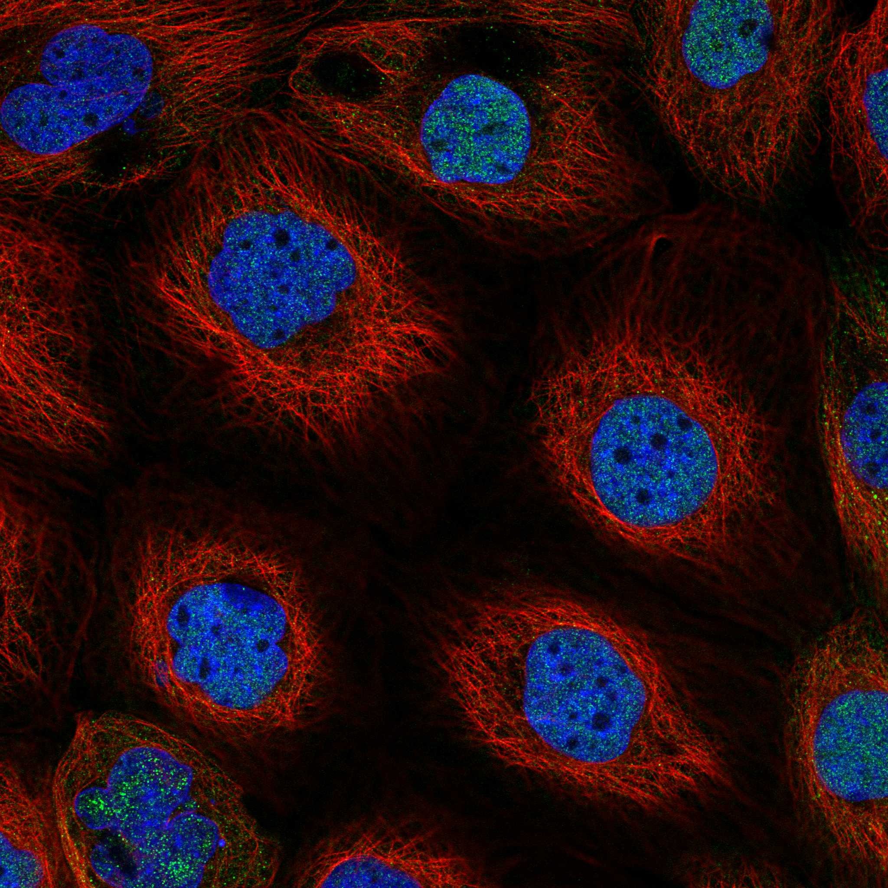
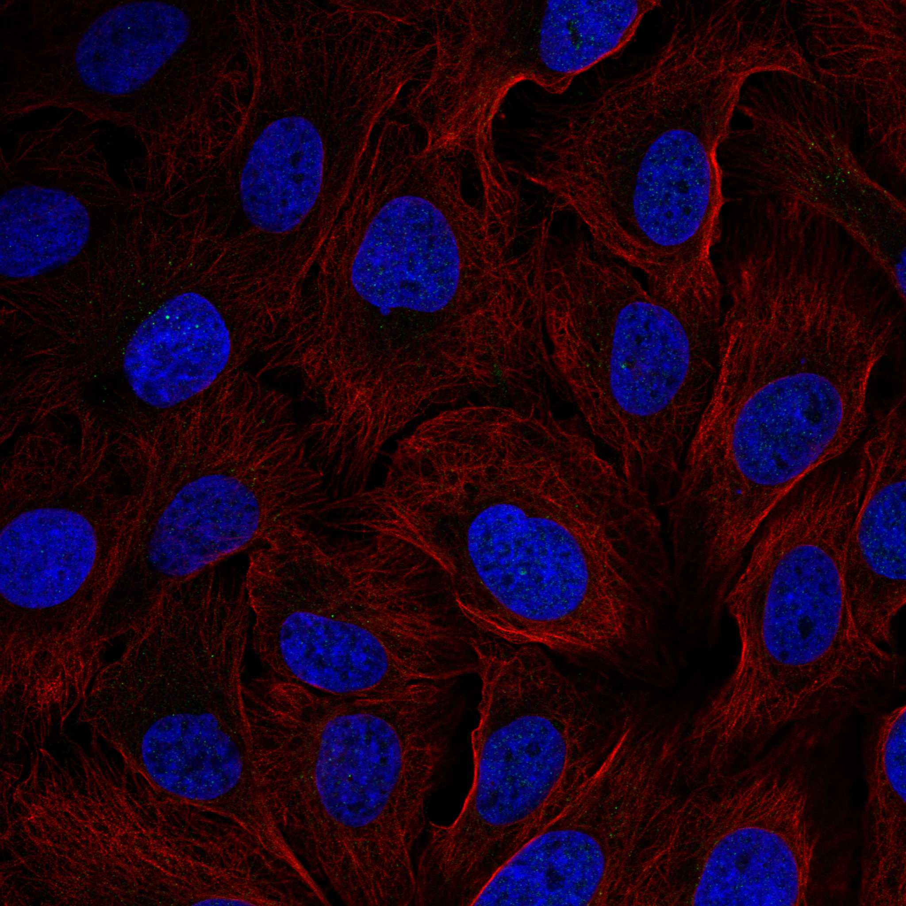
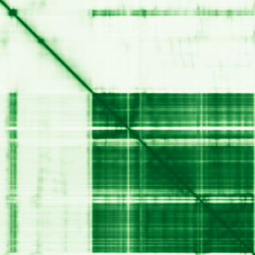

type: protein-evaluation gene: "FAN1" date: 2026-06-03 tags: [protein-scout, nuclear-protein, evaluation] status: scored ---
FAN1 核蛋白评估报告 (Full Re-evaluation)
1. 基本信息
| 项目 | 内容 |
|---|---|
| 基因名 / 别名 | FAN1 / KIAA1018, MTMR15 |
| 蛋白名称 | Fanconi-associated nuclease 1 |
| 蛋白大小 | 1017 aa / 114.2 kDa |
| UniProt ID | Q9Y2M0 |
| 评估日期 | 2026-06-03 |
IF 图像:  
2. 评分总览
| 维度 | 得分 | 满分 | 加权后 | 关键证据摘要 |
|---|---|---|---|---|
| 核定位特异性 | 7/10 | ×4 | 28 | HPA: Nucleoplasm, Cytosol; 额外: Cytokinetic bridge, Primary cilium; UniProt: Nucleus |
| 蛋白大小 | 8/10 | ×1 | 8 | 1017 aa / 114.2 kDa |
| 研究新颖性 | 2/10 | ×5 | 10 | PubMed strict=99 篇 (≤100→2) |
| 三维结构 | 6/10 | ×3 | 18 | AlphaFold v6 pLDDT=69.9; PDB: 4REA, 4REB, 4REC, 4RI8, 4RI9, 4RIA, 4RIB |
| 调控结构域 | 7/10 | ×2 | 14 | InterPro: IPR033315, IPR049132, IPR049126, IPR049125, IPR049 |
| PPI 网络 | 3/10 | ×3 | 9 | STRING 15 partners; IntAct 15 interactions |
| 互证加分 | — | max +3 | 2.5 | PDB+AF+STRING+IntAct cross-validation |
| 原始总分 | 89.5/180 | |||
| 归一化总分 | 49.7/100 |
3. 详细分析
3.1 核定位证据
| 来源 | 定位 | 可信度 |
|---|---|---|
| Protein Atlas (IF) | Nucleoplasm, Cytosol; 额外: Cytokinetic bridge, Primary cilium | Approved |
| UniProt | Nucleus | Swiss-Prot/TrEMBL |
IF 图像获取: IF图像已下载并嵌入 (2张)
GO Cellular Component:
- cilium (GO:0005929)
- cytosol (GO:0005829)
- intercellular bridge (GO:0045171)
- nucleoplasm (GO:0005654)
- nucleus (GO:0005634)
结论: 主要核定位，HPA 可靠性良好，有辅助数据源支持。
3.2 蛋白大小评估
评价: 大小基本合适，可用于常规实验。
3.3 研究现状
| 指标 | 数值 |
|---|---|
| PubMed strict count | 99 |
| PubMed broad count | 195 |
| 别名(未计入scoring) | Aliases observed but not used for scoring: KIAA1018, MTMR15 |
关键文献: 1. Antisense oligonucleotide-mediated MSH3 suppression reduces somatic CAG repeat expansion in Huntington's disease iPSC-derived striatal neurons.. *Science translational medicine*. PMID: 39937881 2. Antagonistic roles of canonical and Alternative-RPA in disease-associated tandem CAG repeat instability.. *Cell*. PMID: 37827155 3. 15q13.3 Recurrent Deletion.. **. PMID: 21290787 4. FAN1 controls mismatch repair complex assembly via MLH1 retention to stabilize CAG repeat expansion in Huntington's disease.. *Cell reports*. PMID: 34469738 5. FAN1, a DNA Repair Nuclease, as a Modifier of Repeat Expansion Disorders.. *Journal of Huntington's disease*. PMID: 33579867
评价: 研究基础较多，新颖性有限。
3.4 三维结构分析
| 指标 | 数值 |
|---|---|
| AlphaFold 版本 | v6 |
| AlphaFold 平均 pLDDT | 69.9 |
| 高置信度残基 (pLDDT>90) 占比 | 46.2% |
| 置信残基 (pLDDT 70-90) 占比 | 13.8% |
| 中等置信 (pLDDT 50-70) 占比 | 4.6% |
| 低置信 (pLDDT<50) 占比 | 35.4% |
| 有序区域 (pLDDT>70) 占比 | 60.0% |
| 可用 PDB 条目 | 4REA, 4REB, 4REC, 4RI8, 4RI9, 4RIA, 4RIB, 4RIC, 4RID, 4RY3 |
PAE (Predicted Aligned Error): 
评价: AlphaFold 预测质量有限（pLDDT=69.9），有序残基占 60.0%。
3.5 结构域分析
| 来源 | 结构域 |
|---|---|
| InterPro/Pfam | InterPro: IPR033315, IPR049132, IPR049126, IPR049125, IPR049138; Pfam: PF21315, PF21169, PF21170 |
染色质调控潜力分析: 存在已知结构域注释，可作为功能研究的结构基础。
3.6 PPI 网络
STRING 预测互作 (combined score >0.4):
| Partner | Combined Score | Experimental | 功能类别 |
|---|---|---|---|
| FANCD2 | 0.999 | 0.833 | — |
| MLH1 | 0.997 | 0.838 | — |
| FANCI | 0.995 | 0.510 | — |
| PMS2 | 0.992 | 0.785 | — |
| PMS1 | 0.961 | 0.777 | — |
| MTMR10 | 0.949 | 0.000 | — |
| SLX4 | 0.865 | 0.000 | — |
| TRPM1 | 0.852 | 0.000 | — |
| SLX1A | 0.850 | 0.000 | — |
| DCLRE1A | 0.830 | 0.115 | — |
实验验证互作 (IntAct):
| Partner | 方法 | PMID | ||
|---|---|---|---|---|
| FSCN1 | psi-mi:"MI:0096"(pull down) | imex:IM-15159 | pubmed:20603015 | |
| GRB2 | psi-mi:"MI:0096"(pull down) | pubmed:12577067 | mint:MINT-5216 | |
| DNAJB9 | psi-mi:"MI:0398"(two hybrid pooling approach) | pubmed:16169070 | imex:IM-16517 | |
| RAB1A | psi-mi:"MI:0398"(two hybrid pooling approach) | pubmed:16169070 | imex:IM-16517 | |
| SGK1 | psi-mi:"MI:0006"(anti bait coimmunoprecipitation) | pubmed:17353931 | ||
| GH1 | psi-mi:"MI:0006"(anti bait coimmunoprecipitation) | pubmed:17353931 | ||
| FTSJ1 | psi-mi:"MI:0006"(anti bait coimmunoprecipitation) | pubmed:17353931 | ||
| EIF1B | psi-mi:"MI:0006"(anti bait coimmunoprecipitation) | pubmed:17353931 | ||
| EIF6 | psi-mi:"MI:0006"(anti bait coimmunoprecipitation) | pubmed:17353931 | ||
| TFE3 | psi-mi:"MI:0006"(anti bait coimmunoprecipitation) | pubmed:17353931 |
PPI 互证分析:
- STRING + IntAct 均有数据
- STRING partners: 15，IntAct interactions: 15
- 调控相关比例: 0 / 15 = 0%
评价: STRING 15 个预测互作，IntAct 15 个实验互作。调控相关配体占比 0%。
3.7 多库互证
| 维度 | 来源 | 结果 | 是否一致 |
|---|---|---|---|
| 三维结构 | AlphaFold pLDDT=69.9 + PDB: 4REA, 4REB, 4REC, 4RI8, 4RI9, | pLDDT=69.9, v6 | 预测+实验 |
| 定位 | UniProt + HPA | Nucleus / Nucleoplasm, Cytosol; 额外: Cytokinetic bridge, Prim | 一致 |
| PPI | STRING + IntAct | 15 + 15 interactions | 数据充分 |
互证加分明细:
- PDB + AlphaFold 双源验证: +0.5
- 多库定位一致 (3源): +0.5
- STRING + IntAct 双源验证: +0.5
- 结构域 + AlphaFold 质量: +0
- PDB 多条目覆盖 (≥3): +1.0
总分: +2.5 / max +3
4. 总体评价
推荐等级: ⭐⭐
核心优势: 1. FAN1 — Fanconi-associated nuclease 1，研究基础较多，新颖性有限。 2. 蛋白大小1017 aa，大小基本合适，可用于常规实验。
风险/不确定性: 1. PubMed 99 篇，已有一定研究基础 2. AlphaFold 预测质量一般（pLDDT=69.9），需要更多实验结构验证
下一步建议:
- [ ] 查阅最新关键文献补充研究背景
- [ ] 获取 Protein Atlas IF 图像确认亚细胞定位
- [ ] 设计体外实验验证核定位及潜在调控功能
5. 数据来源
- UniProt: https://www.uniprot.org/uniprotkb/Q9Y2M0
- Protein Atlas: https://www.proteinatlas.org/ENSG00000198690-FAN1/subcellular
- PubMed: https://pubmed.ncbi.nlm.nih.gov/?term=FAN1
- AlphaFold: https://alphafold.ebi.ac.uk/entry/Q9Y2M0
- STRING: https://string-db.org/network/9606.ENSP00000
- Data fetched live: 2026-06-03